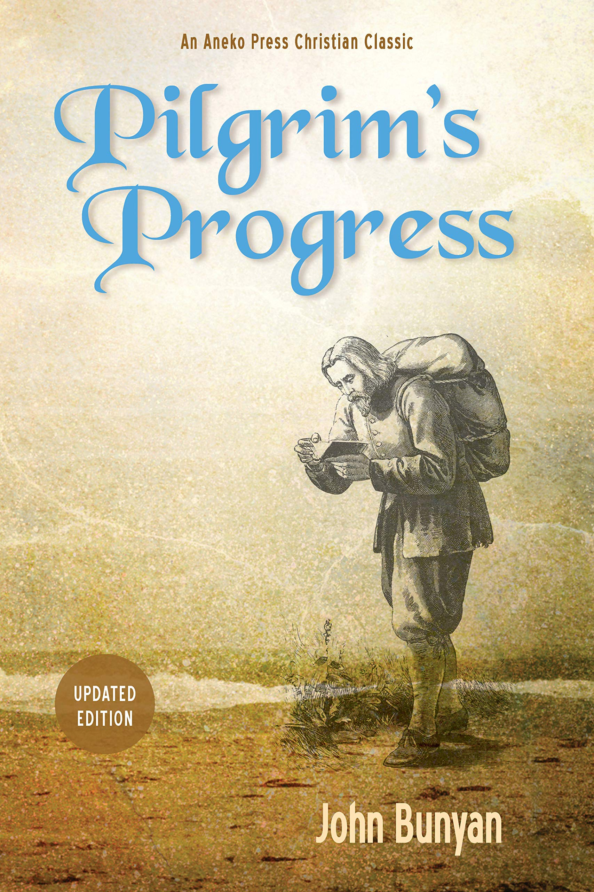
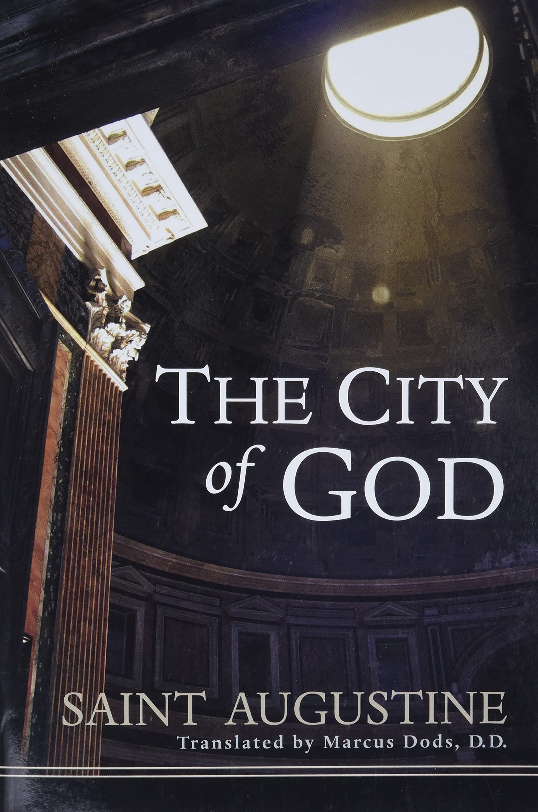
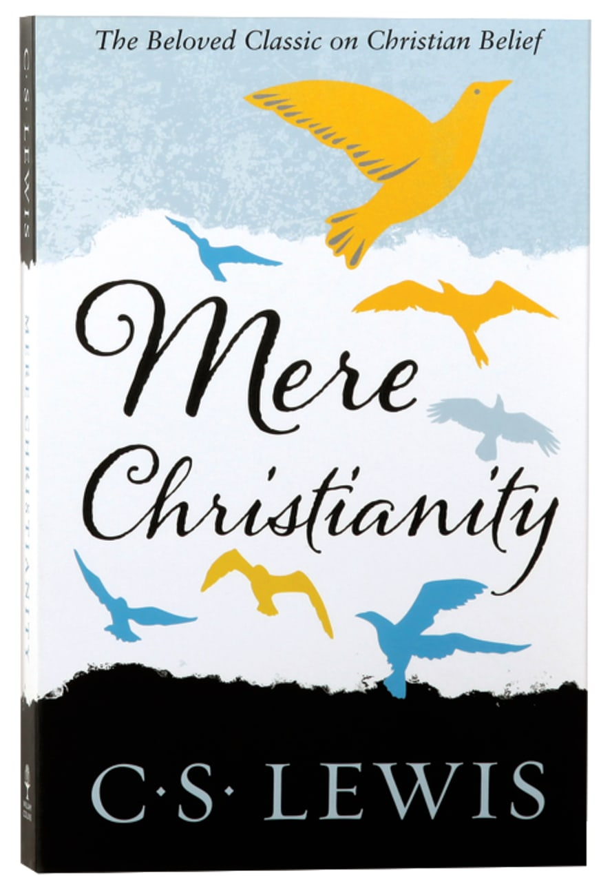
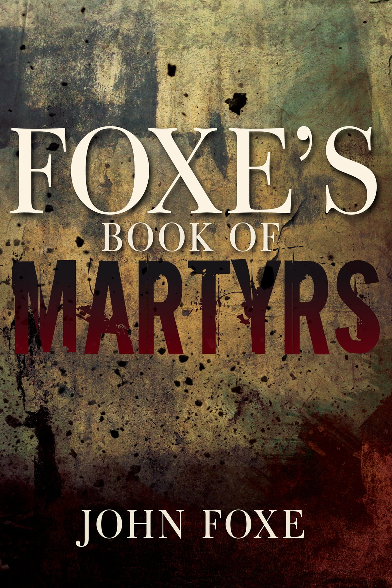
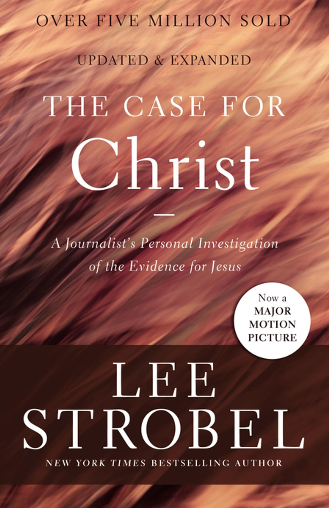

The Pilgrim's Progress from this World, to that which is to Come is a 1678 Christian allegory written by John Bunyan.
On the City of God Against the Pagans often called The City of God, is a book of Christian philosophy written in Latin by Augustine of Hippo in the early 5th century AD.
Mere Christianity is a Christian apologetical book by the British author C. S. Lewis.
The Actes and Monuments popularly known as Foxe's Book of Martyrs, is a work of Protestant history and martyrology by Protestant English historian John Foxe.
A Journalist's Personal Investigation of the Evidence for Jesus.
    